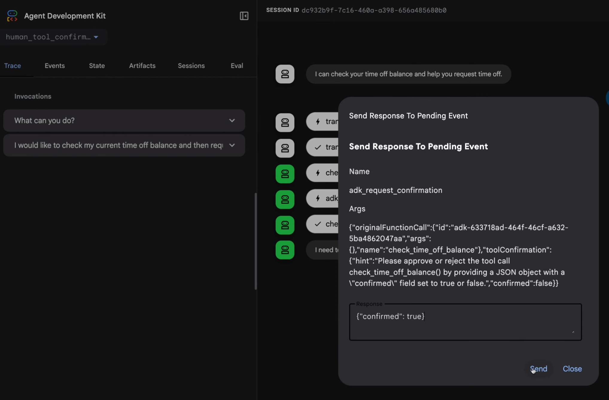

ADK 도구에 대한 작업 확인 (Action Confirmation)¶
일부 에이전트 워크플로는 의사 결정, 검증, 보안 또는 일반적인 감독을 위해 확인이 필요합니다. 이러한 경우 워크플로를 진행하기 전에 사람이나 감독 시스템으로부터 응답을 받아야 합니다. ADK(Agent Development Kit)의 도구 확인(Tool Confirmation) 기능을 사용하면 ADK 도구의 실행을 일시 중지하고 사용자 또는 다른 시스템과 상호작용하여 확인을 받거나 구조화된 데이터를 수집한 후 계속 진행할 수 있습니다. ADK 도구에서 도구 확인을 다음과 같은 방식으로 사용할 수 있습니다:
- 불리언 확인 (Boolean Confirmation): 확인 플래그 또는 프로바이더로 도구를 구성할 수 있습니다. 이 옵션은 예/아니오 확인 응답을 위해 도구를 일시 중지합니다.
- 고급 확인 (Advanced Confirmation): 구조화된 데이터 응답이 필요한 시나리오의 경우 확인을 설명하는 텍스트 프롬프트와 예상되는 응답을 도구에 구성할 수 있습니다.
요청이 사용자에게 전달되는 방식을 구성할 수 있으며, 시스템은 ADK 서버의 REST API를 통해 전송된 원격 응답을 사용할 수도 있습니다. ADK 웹 사용자 인터페이스에서 확인 기능을 사용할 때 에이전트 워크플로는 그림 1과 같이 입력을 요청하는 대화 상자를 사용자에게 표시합니다:

그림 1. 고급 도구 응답 구현을 사용한 확인 응답 요청 대화 상자 예시.
다음 섹션에서는 확인 시나리오에 이 기능을 사용하는 방법을 설명합니다. 완전한 코드 샘플은 human_tool_confirmation 예제를 참고하세요. 에이전트 워크플로에 사람의 입력을 통합하는 추가적인 방법은 Human-in-the-loop 에이전트 패턴을 참고하세요.
불리언 확인 (Boolean confirmation)¶
도구에 사용자의 간단한 yes 또는 no만 필요한 경우 확인 단계를 추가할 수 있습니다. Python, Go 및 Java에서는 도구를 FunctionTool 클래스로 래핑하고 require_confirmation 매개변수(또는 이에 상응하는 매개변수)를 True로 설정하여 이를 활성화할 수 있습니다. Kotlin에서는 도구 함수의 @Tool 어노테이션에 requireConfirmation = true를 설정합니다. TypeScript에서는 ToolContext를 사용하여 execute 함수 내에서 이 로직을 수동으로 구현합니다.
다음 예시는 불리언 확인을 활성화하는 방법을 보여줍니다:
root_agent = Agent(
# ...
tools = [
# 도구 호출에 대한 사용자 확인을 요구하려면 require_confirmation을 True로 설정합니다.
FunctionTool(reimburse, require_confirmation=True),
],
# ...
)
# 이 구현 방법은 최소한의 코드가 필요하지만 사용자나 확인 시스템의 간단한 승인으로 제한됩니다.
# 이 접근 방식에 대한 완전한 예제는 다음 코드 샘플을 참조하세요:
# https://github.com/google/adk-python/blob/main/contributing/samples/human_tool_confirmation/agent.py
Note
현재 ADK for TypeScript에서는 도구의 execute 함수 내에서 확인 로직을 수동으로 구현해야 합니다.
/**
* A reimbursement tool with dynamic confirmation logic.
*/
export const reimburseTool = new FunctionTool({
name: 'reimburse',
description: 'Reimburse an amount. Large amounts (>1000) require manager approval.',
parameters: z.object({
amount: z.coerce.number().describe('The amount to reimburse.'),
}),
execute: async ({amount}, toolContext) => {
// 1. Check if we already have a confirmed response.
if (toolContext?.toolConfirmation?.confirmed) {
const isLarge = amount > 1000;
return {
status: 'SUCCESS',
message: isLarge
? `Large reimbursement of ${amount} approved by manager and processed.`
: `Reimbursement of ${amount} has been successfully processed.`,
};
}
// 2. Request a tool confirmation.
const isLarge = amount > 1000;
toolContext?.requestConfirmation({
hint: isLarge
? `The amount ${amount} exceeds the $1000 limit and requires manager approval.`
: `Do you want to reimburse ${amount}?`,
payload: {amount},
});
// 3. Return a status that tells the agent we are waiting.
// Note: The model won't see this until the turn resumes after confirmation.
return {
status: isLarge ? 'AWAITING_MANAGER_APPROVAL' : 'AWAITING_CONFIRMATION',
message: 'This request requires approval to proceed.',
};
},
});
export const rootAgent = new LlmAgent({
name: 'Finance_Assistant',
model: 'gemini-flash-latest',
instruction: `You are a Finance Assistant.
- You MUST use the 'reimburse' tool for ALL reimbursement requests.
- MANDATORY: Every tool call MUST be accompanied by a text response in the same message.
- THRESHOLD LOGIC:
- For amounts <= 1000: Say "I am initiating the reimbursement request for [amount]. Please confirm it to proceed."
- For amounts > 1000: Say "I am initiating the reimbursement request for [amount]. Since this exceeds $1000, manager approval is required. Please confirm the request to submit it for review."
- EXAMPLES:
User: "Reimburse me $45"
Model: "I am initiating the reimbursement request for 45. Please confirm it to proceed." [Tool Call: reimburse(amount=45)]
User: "Reimburse me $2500"
Model: "I am initiating the reimbursement request for 2500. Since this exceeds $1000, manager approval is required. Please confirm the request to submit it for review." [Tool Call: reimburse(amount=2500)]
- If the user provides a currency symbol (like $), ignore it and pass only the number to the tool.
- In the Web UI, the user will see a 'Confirm' button. In the terminal, the user should simulate a confirmation response.`,
tools: [reimburseTool],
});
reimburseTool, _ := functiontool.New(functiontool.Config{
Name: "reimburse",
Description: "Reimburse an amount",
// 도구 호출에 대한 사용자 확인을 요구하려면 RequireConfirmation을 true로 설정합니다.
RequireConfirmation: true,
}, func(ctx tool.Context, args ReimburseArgs) (ReimburseResult, error) {
// 실제 구현
return ReimburseResult{Status: "ok"}, nil
})
rootAgent, _ := llmagent.New(llmagent.Config{
// ...
Tools: []tool.Tool{reimburseTool},
})
class ReimbursementTools {
/** Reimburse an amount. */
@Tool(requireConfirmation = true) // Pause for user confirmation before every call.
fun reimburse(
@Param("The amount to reimburse.") amount: Int,
): Map<String, Any?> = mapOf("status" to "ok", "reimbursedAmount" to amount)
}
val reimbursementAgent =
LlmAgent(
name = "reimbursement_agent",
model = Gemini(name = "gemini-flash-latest"),
tools = ReimbursementTools().generatedTools(),
)
확인 필요 함수 (Require confirmation function)¶
도구의 입력에 따라 불리언 응답을 반환하는 함수를 사용하여 확인 요구사항 동작을 동적으로 수정할 수 있습니다. TypeScript에서는 execute 함수에 조건부 로직을 추가하여 이를 처리합니다. Kotlin에서는 @Tool 어노테이션의 플래그가 컴파일 타임 상수이므로 조건부 로직이 도구 함수 내부에 배치됩니다.
reimburseTool, _ := functiontool.New(functiontool.Config{
Name: "reimburse",
Description: "Reimburse an amount",
// RequireConfirmationProvider를 사용하면 사용자 확인이 필요한지 여부를 동적으로 결정할 수 있습니다.
RequireConfirmationProvider: func(args ReimburseArgs) bool {
return args.Amount > 1000
},
}, func(ctx tool.Context, args ReimburseArgs) (ReimburseResult, error) {
// 실제 구현
return ReimburseResult{Status: "ok"}, nil
})
// ADK Java에서는 람다 매개변수 대신 ToolContext를 사용하여 도구 로직 내에서 동적 임계값 확인 로직을 직접 평가합니다.
public Map<String, Object> reimburse(
@Schema(name="amount") int amount, ToolContext toolContext) {
// 1. 동적 임계값 확인
if (amount > 1000) {
Optional<ToolConfirmation> toolConfirmation = toolContext.toolConfirmation();
if (toolConfirmation.isEmpty()) {
toolContext.requestConfirmation("Amount > 1000 requires approval.");
return Map.of("status", "Pending manager approval.");
} else if (!toolConfirmation.get().confirmed()) {
return Map.of("status", "Reimbursement rejected.");
}
}
// 2. 실제 도구 로직 진행
return Map.of("status", "ok", "reimbursedAmount", amount);
}
LlmAgent rootAgent = LlmAgent.builder()
// ...
.tools(
// 사용자 정의 임계값 로직이 이미 메서드 내부에서 처리되므로 requireConfirmation 플래그가 설정되지 않습니다!
FunctionTool.create(this, "reimburse")
)
// ...
.build();
class ReimbursementTools {
/** Reimburse an amount, requiring manager approval above a threshold. */
@Tool
fun reimburse(
context: ToolContext,
@Param("The amount to reimburse.") amount: Int,
): Map<String, Any?> {
// The @Tool annotation's requireConfirmation flag is a compile-time constant,
// so the threshold is evaluated here using the ToolContext instead.
if (amount > 1000) {
val confirmation = context.toolConfirmation
if (confirmation == null) {
context.requestConfirmation(hint = "Amount > 1000 requires approval.")
// Return an intermediate status while the confirmation is pending.
return mapOf("status" to "Pending manager approval.")
}
if (!confirmation.confirmed) {
return mapOf("status" to "Reimbursement rejected.")
}
}
return mapOf("status" to "ok", "reimbursedAmount" to amount)
}
}
Note
@Tool 어노테이션의 requireConfirmation 플래그는 컴파일 타임 상수이므로, ADK Java에서와 마찬가지로 ToolContext를 사용하여 도구 내부에서 임계값을 평가합니다.
고급 확인 (Advanced confirmation)¶
도구 확인에 사용자에게 더 많은 세부정보가 필요하거나 더 복잡한 응답이 필요한 경우 tool_confirmation 구현을 사용합니다. 이 접근 방식은 ToolContext 객체를 확장하여 사용자를 위한 요청에 대한 텍스트 설명을 추가하고 더 복잡한 응답 데이터를 허용합니다. 이러한 방식으로 도구 확인을 구현하면 도구 실행을 일시 중지하고 특정 정보를 요청한 다음 제공된 데이터로 도구를 재개할 수 있습니다.
이 확인 흐름에는 시스템이 사람의 응답을 위한 입력 요청을 조합하고 전송하는 요청 단계와 시스템이 반환된 데이터를 수신하고 처리하는 응답 단계가 있습니다.
확인 정의¶
고급 확인을 사용하여 도구를 만들 때는 hint 및 payload 매개변수와 함께 Tool Context Request Confirmation 메서드를 사용합니다:
hint: 사용자에게 필요한 내용을 설명하는 설명 메시지.payload: 반환될 것으로 예상하는 데이터의 구조. 이는 JSON 형식의 문자열로 직렬화될 수 있어야 합니다.
이 접근 방식에 대한 완전한 예제는 human_tool_confirmation 코드 샘플을 참고하세요. 확인을 받는 동안 에이전트 워크플로 도구 실행이 일시 중지됩니다. 확인을 받은 후 tool_confirmation.payload 객체에서 확인 응답에 액세스한 다음 워크플로 실행을 진행할 수 있습니다.
다음 코드는 직원의 휴가 요청을 처리하는 도구의 구현 예시를 보여줍니다:
def request_time_off(days: int, tool_context: ToolContext):
"""직원의 휴가를 요청합니다."""
# ...
tool_confirmation = tool_context.tool_confirmation
if not tool_confirmation:
tool_context.request_confirmation(
hint=(
'Please approve or reject the tool call request_time_off() by'
' responding with a FunctionResponse with an expected'
' ToolConfirmation payload.'
),
payload={
'approved_days': 0,
},
)
# 도구가 확인 응답을 기다리고 있음을 나타내는 중간 상태 반환:
return {'status': 'Manager approval is required.'}
approved_days = tool_confirmation.payload['approved_days']
approved_days = min(approved_days, days)
if approved_days == 0:
return {'status': 'The time off request is rejected.', 'approved_days': 0}
return {
'status': 'ok',
'approved_days': approved_days,
}
/**
* A tool that requests time off for an employee.
* It uses the Advanced Confirmation pattern to request manager approval.
*/
export const requestTimeOffTool = new FunctionTool({
name: 'request_time_off',
description: 'Request days off for the employee.',
parameters: z.object({
days: z.number().describe('The number of days requested.'),
}),
execute: async ({days}, toolContext) => {
const confirmation = toolContext?.toolConfirmation;
if (!confirmation) {
// Step 1: Request confirmation with a payload
toolContext?.requestConfirmation({
hint:
'Please approve or reject the tool call request_time_off() by ' +
'responding with a FunctionResponse with an expected ' +
'ToolConfirmation payload.',
payload: {
approved_days: 0,
},
});
// Return a descriptive status to the agent
return {
status: 'PENDING_MANAGER_APPROVAL',
message: `A request for ${days} days is pending manager approval.`,
};
}
// Step 2: Process the confirmation response
if (!confirmation.confirmed) {
return {
status: 'CANCELLED',
message: 'The request was cancelled by the user.',
};
}
let approvedDays = (confirmation.payload as any)['approved_days'] as number;
approvedDays = Math.min(approvedDays, days);
if (approvedDays === 0) {
return {
status: 'REJECTED',
message: 'The time off request was rejected by the manager.',
approved_days: 0,
};
}
return {
status: 'SUCCESS',
message: `The request for ${days} days was approved (Total approved: ${approvedDays}).`,
approved_days: approvedDays,
};
},
});
export const rootAgent = new LlmAgent({
name: 'HR_Assistant',
model: 'gemini-flash-latest',
instruction: `You are an HR Assistant.
1. Use the 'request_time_off' tool to help employees with leave requests.
2. MANDATORY: Every tool call MUST be accompanied by a text response in the same message.
3. EXAMPLE:
User: "I want 5 days off"
Model: "I am initiating your leave request for 5 days. Management approval is required, so please confirm this request." [Tool Call: request_time_off(days=5)]
4. In the terminal, if they want to 'confirm', tell them to simulate a confirmation response.
5. Once confirmed, the system will automatically provide the result of the approval.`,
tools: [requestTimeOffTool],
});
func requestTimeOff(ctx tool.Context, args RequestTimeOffArgs) (map[string]any, error) {
confirmation := ctx.ToolConfirmation()
if confirmation == nil {
ctx.RequestConfirmation(
"Please approve or reject the tool call requestTimeOff() by "+
"responding with a FunctionResponse with an expected "+
"ToolConfirmation payload.",
map[string]any{"approved_days": 0},
)
return map[string]any{"status": "Manager approval is required."}, nil
}
payload := confirmation.Payload.(map[string]any)
// Go에서 JSON의 map[string]any 값은 기본적으로 float64입니다
approvedDays := int(payload["approved_days"].(float64))
approvedDays = min(approvedDays, args.Days)
if approvedDays == 0 {
return map[string]any{"status": "The time off request is rejected.", "approved_days": 0}, nil
}
return map[string]any{
"status": "ok",
"approved_days": approvedDays,
}, nil
}
public Map<String, Object> requestTimeOff(
@Schema(name="days") int days,
ToolContext toolContext) {
// 직원의 휴가를 요청합니다.
// ...
Optional<ToolConfirmation> toolConfirmation = toolContext.toolConfirmation();
if (toolConfirmation.isEmpty()) {
toolContext.requestConfirmation(
"Please approve or reject the tool call requestTimeOff() by " +
"responding with a FunctionResponse with an expected " +
"ToolConfirmation payload.",
Map.of("approved_days", 0)
);
// 도구가 확인 응답을 기다리고 있음을 나타내는 중간 상태 반환:
return Map.of("status", "Manager approval is required.");
}
Map<String, Object> payload = (Map<String, Object>) toolConfirmation.get().payload();
int approvedDays = (int) payload.get("approved_days");
approvedDays = Math.min(approvedDays, days);
if (approvedDays == 0) {
return Map.of("status", "The time off request is rejected.", "approved_days", 0);
}
return Map.of(
"status", "ok",
"approved_days", approvedDays
);
}
class TimeOffTools {
/** Request day off for the employee. */
@Tool
fun requestTimeOff(
context: ToolContext,
@Param("The number of days requested.") days: Int,
): Map<String, Any?> {
val confirmation = context.toolConfirmation
if (confirmation == null) {
context.requestConfirmation(
hint =
"Please approve or reject the tool call requestTimeOff() by responding " +
"with a FunctionResponse with an expected ToolConfirmation payload.",
payload = mapOf("approved_days" to 0),
)
// Return an intermediate status indicating that the tool is waiting for
// a confirmation response:
return mapOf("status" to "Manager approval is required.")
}
// The payload comes back decoded from JSON, so the number may arrive as any
// Number subtype. Read it through Number rather than casting straight to Int.
val payload = confirmation.payload as? Map<*, *>
val approvedDays =
minOf((payload?.get("approved_days") as? Number)?.toInt() ?: 0, days)
if (approvedDays == 0) {
return mapOf("status" to "The time off request is rejected.", "approved_days" to 0)
}
return mapOf("status" to "ok", "approved_days" to approvedDays)
}
}
REST API를 통한 원격 확인¶
에이전트 워크플로의 사람 확인을 위한 활성 사용자 인터페이스가 없는 경우 명령줄 인터페이스를 통해 또는 이메일이나 채팅 애플리케이션과 같은 다른 채널을 통해 확인을 처리할 수 있습니다. 도구 호출을 확인하려면 사용자 또는 호출 애플리케이션이 도구 확인 데이터가 포함된 FunctionResponse 이벤트를 전송해야 합니다.
ADK API 서버의 /run 또는 /run_sse 엔드포인트로 요청을 보내거나 ADK 러너로 직접 보낼 수 있습니다. 다음 예시는 curl 명령을 사용하여 /run_sse 엔드포인트로 확인을 보냅니다:
curl -X POST http://localhost:8000/run_sse \
-H "Content-Type: application/json" \
-d '{
"app_name": "human_tool_confirmation",
"user_id": "user",
"session_id": "7828f575-2402-489f-8079-74ea95b6a300",
"new_message": {
"parts": [
{
"function_response": {
"id": "adk-13b84a8c-c95c-4d66-b006-d72b30447e35",
"name": "adk_request_confirmation",
"response": {
"confirmed": true,
"payload": {
"approved_days": 5
}
}
}
}
],
"role": "user"
}
}'
확인을 위한 REST 기반 응답은 다음 요구사항을 충족해야 합니다:
function_response의id는adk_request_confirmationFunctionCall이벤트의function_call_id와 일치해야 합니다.name은adk_request_confirmation이어야 합니다.-
response객체에는confirmed상태와 추가payload데이터가 포함됩니다.참고: 재개(Resume) 기능과 함께 확인 사용
ADK 에이전트 워크플로가 Resume 기능으로 구성된 경우 확인 응답과 함께 호출 ID(
invocation_id) 매개변수도 포함해야 합니다. 제공하는 호출 ID는 확인 요청을 생성한 것과 동일한 호출이어야 하며, 그렇지 않으면 시스템이 확인 응답으로 새 호출을 시작합니다. 에이전트가 재개 기능을 사용하는 경우 응답에 포함될 수 있도록 확인 요청에 호출 ID를 매개변수로 포함하는 것을 고려하세요. 재개 기능 사용에 대한 자세한 내용은 중단된 에이전트 재개를 참고하세요.
알려진 제한사항¶
도구 확인 기능에는 다음과 같은 제한사항이 있습니다:
- DatabaseSessionService는 이 기능에서 지원되지 않습니다.
- VertexAiSessionService는 이 기능에서 지원되지 않습니다.
다음 단계¶
에이전트 워크플로용 ADK 도구 빌드에 대한 자세한 내용은 함수 도구를 참고하세요.